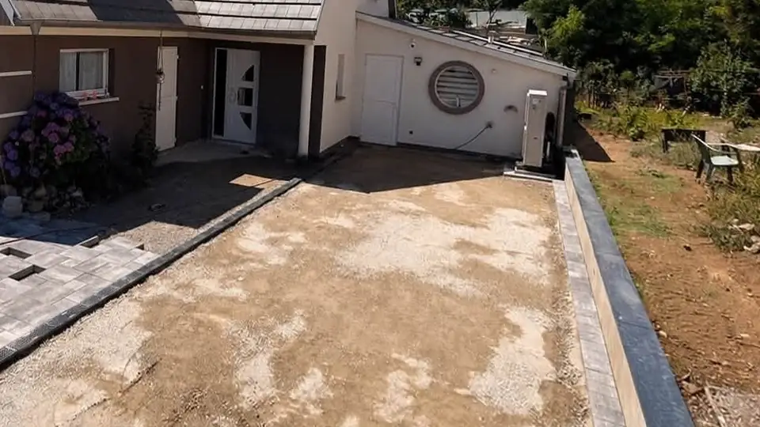

Nos prestations
Tout ce qu’il faut pour un extérieur fini, de la préparation du terrain à la dernière bordure.
Terrassement et décaissement
Nous préparons et nivelons le terrain, décaissons ce qui doit l’être et évacuons les matériaux. Fouilles de fondations pour une extension, tranchées pour les réseaux enterrés, démolition d’un ancien ouvrage : c’est la base de tout chantier d’extérieur.
Ordre de prix20 à 40 €/m²TTC, décaissement de 30 à 50 cm, évacuation des terres et fond compacté
- Préparation et mise à niveau du terrain
- Décaissement et évacuation des matériaux
- Fouilles de fondations pour une extension
- Tranchées pour réseaux enterrés
- Démolition et terrain remis à plat
Exemples : Décaissement de 50 cm avant un enrobé, Fouilles de fondations pour une extension, Une ancienne piscine devient un terrain prêt à aménager
À lire : Pourquoi décaisser avant de poser une allée ou une entrée ?
Enrobé
Après la préparation du fond et la pose des bordures, nous réalisons l’enrobé de votre cour, de votre allée, de l’entrée de garage ou des places de stationnement : une surface propre, stable et durable.
Ordre de prix35 à 60 €/m²TTC, enrobé à chaud de 5 à 6 cm, sur un fond déjà préparé
- Mise à niveau et compactage du fond
- Bordures et caniveaux
- Application de l’enrobé
- Accès et places de stationnement
Exemples : L’entrée d’une maison neuve, Une entrée en enrobé et pavés, Décaissement de 50 cm avant un enrobé
À lire : Enrobé ou pavés : que choisir pour votre entrée ?, Prix d’une entrée en enrobé dans le Haut-Rhin en 2026


Pavage et terrasses
Terrasses, allées le long de la maison, bandes de pavés qui encadrent une surface en enrobé : nous posons pavés et dalles grand format, avec des finitions soignées.
Ordre de prix75 à 120 €/m²TTC, pavés ou dalles grand format, lit de pose et joints
- Terrasses en pavés grand format
- Allées et cheminements
- Bandes de pavés autour de l’enrobé
- Finitions et joints
Exemples : Terrasse en pavés et gazon de placage, Maison neuve : bordures, terrasse et gazon, Une entrée en enrobé et pavés


Bordures et drainage
Bordures pour délimiter et maintenir les surfaces, caniveaux de drainage pour évacuer l’eau de pluie devant le garage ou l’entrée : des éléments discrets dont dépend la tenue de l’ensemble.
Ordre de prix25 à 45 €/mlTTC, bordure béton posée sur béton de calage
- Pose de bordures
- Caniveaux de drainage et grilles
- Allées bordées autour de la maison
Exemples : L’entrée d’une maison neuve, Maison neuve : bordures, terrasse et gazon
À lire : Pourquoi décaisser avant de poser une allée ou une entrée ?


Dalles béton
Préparation du terrain, coffrage, mise à niveau et finition soignée : une dalle béton sur mesure, support solide pour la suite de votre aménagement.
Ordre de prix110 à 150 €/m²TTC, dalle de 10 à 12 cm, coffrage et treillis soudé
- Préparation du terrain
- Coffrage et mise à niveau
- Coulage et finition
Exemples : Dalle béton sur mesure


Clôtures et persiennes aluminium
Nous fournissons et posons des persiennes et des clôtures en aluminium sur mesure, ajustées sur place et intégrées à l’aménagement extérieur.
Ordre de prix180 à 350 €/mlTTC, persienne ou clôture aluminium sur mesure, posée
- Persiennes aluminium sur mesure
- Pose et ajustements sur place
- Intégration avec l’aménagement existant
Persiennes fournies par notre partenaire Ocewood France.
Exemples : Persienne aluminium sur mesure


Gazon en rouleau
Préparation du sol, mise à niveau du terrain puis pose de gazon en rouleau (gazon de placage) : le jardin est vert tout de suite.
Ordre de prix15 à 30 €/m²TTC, préparation du sol, pose et premier arrosage
- Préparation du sol
- Mise à niveau du terrain
- Pose du gazon en rouleau
Exemples : Terrasse en pavés et gazon de placage, Maison neuve : bordures, terrasse et gazon


Ordre de prix
Pour vous faire une idée avant le devis : nos prix habituels, TTC, fourniture et pose comprises.
| Travaux | Ordre de prix TTC | Ce qui est compris |
|---|---|---|
| Terrassement et décaissement | 20 à 40 €/m² | Décaissement de 30 à 50 cm, évacuation des terres et fond compacté |
| Enrobé | 35 à 60 €/m² | Enrobé à chaud de 5 à 6 cm, sur un fond déjà préparé |
| Pavage et terrasses | 75 à 120 €/m² | Pavés ou dalles grand format, lit de pose et joints |
| Bordures et drainage | 25 à 45 €/ml | Bordure béton posée sur béton de calage |
| Dalles béton | 110 à 150 €/m² | Dalle de 10 à 12 cm, coffrage et treillis soudé |
| Clôtures et persiennes aluminium | 180 à 350 €/ml | Persienne ou clôture aluminium sur mesure, posée |
| Gazon en rouleau | 15 à 30 €/m² | Préparation du sol, pose et premier arrosage |
Prix indicatifs. Ils varient avec l’accès, la nature du sol et la surface : le devis gratuit, après une visite, donne le prix exact.
La partie la plus importante ne se voit plus
Une entrée qui dure se joue sous la surface. Voici, en photos de nos chantiers, ce qu’il y a sous une entrée Nova Home.
Étape 1 : Décaissement
On retire la terre végétale et les couches instables, puis on évacue tout. Sur ce chantier de juin, le décaissement a atteint 50 cm.

Étape 2 : Fond compacté
Une grave étalée en couches, mise à niveau et compactée, avec une pente pour l’eau : le support qui empêche les affaissements.
Étape 3 : Bordures et caniveaux
Posées sur béton, les bordures tiennent les bords. Les caniveaux emmènent l’eau de pluie loin de la maison.

Étape 4 : La surface
Enrobé, pavés ou les deux : la seule couche que vous verrez. Elle dure parce que tout ce qu’il y a dessous a été bien fait.
Comme souvent, la partie la plus importante d’un chantier est celle qui ne se verra plus une fois les travaux terminés.
Un projet d’extérieur ? Le devis est gratuit.
Racontez-nous votre projet en deux minutes, photos du terrain comprises.
Demander un devis gratuitAppeler le 07 87 36 53 92
Prochain créneau libre : semaine du 16 novembre